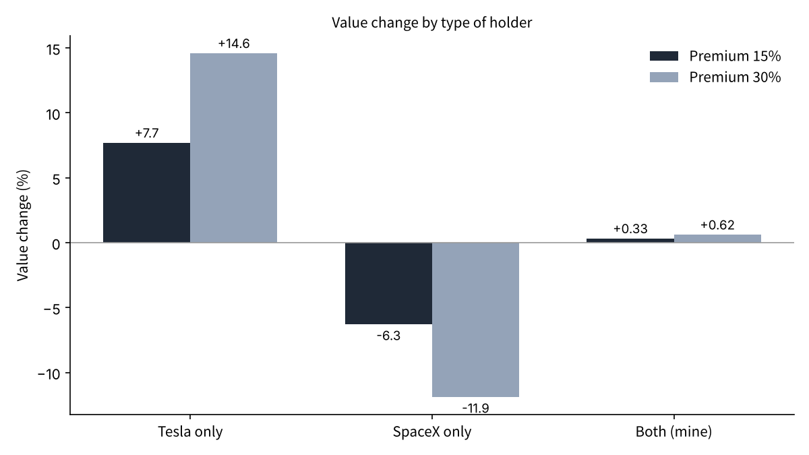
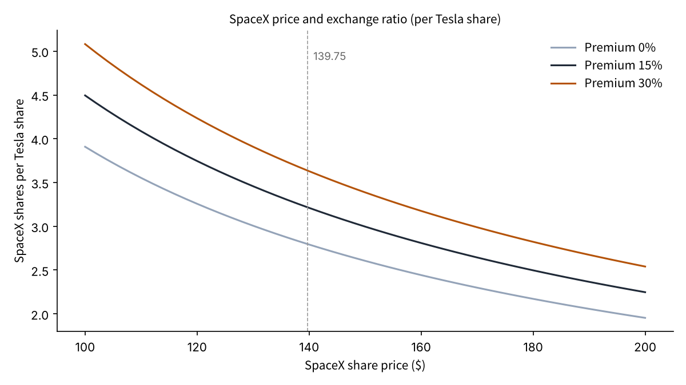

If Tesla and SpaceX Merge, How Many SpaceX Shares Does One Tesla Share Become? Estimating Each Shareholder's Slice from 10-Q Share Counts
Talks on a merger between Tesla and SpaceX have advanced, and the deal could be announced as early as December as the largest in history, according to reports[1]. Both boards have set up special committees of independent directors to negotiate the exchange ratio and governance[1].
For shareholders, the biggest number in any merger is the exchange ratio. A Tesla shareholder's slice depends on how many SpaceX shares each Tesla share is swapped into.
The question here: how many SpaceX shares would one Tesla share become, and how much would that ratio move the value held by Tesla holders, SpaceX holders, and investors who own both?
- At the November 11 closes (Tesla $390.84, SpaceX $139.75), the ratio is about 2.80 SpaceX shares per Tesla share with no premium, about 3.22 with a 15% premium, and about 3.64 with a 30% premium.
- With a 15% premium, Tesla holders gain about 7.7% while SpaceX holders lose about 6.3%. A premium does not create value; it moves value from one group of shareholders to the other.
- For an investor holding roughly equal amounts of both (1,250 SpaceX and 400 Tesla shares), the change is only +0.33% even with a 15% premium. Owning both largely cancels out who wins on the ratio.

The question and background
In this article, the "exchange ratio" is the number of shares of the surviving company handed over for each share of the company that disappears. I assume SpaceX acquires Tesla and pays Tesla shareholders in SpaceX stock.
A "premium" is the amount an acquirer pays above the target's current share price. In public-company takeovers, a premium is normally paid to win the target shareholders' approval[6].
This matters now because reporting has moved to concrete ratio numbers. Barron's estimates that with a 15% premium to Tesla holders, each Tesla share would get about 2.3 SpaceX shares if SpaceX trades at $200, and about 3.2 shares at $140[2].
SpaceX shares have fallen sharply from their highs just after the June IPO, so the share price itself drives the ratio. The ratio is set by two things: the premium and the ratio of the two share prices. I check whose slice moves, and by how much, when each of them changes.
Data and method
Share counts come from the cover pages of each company's 10-Q. SpaceX had 13,581,063,709 shares outstanding as of October 15, 2026[3], and Tesla had 3,952,757,946 shares as of the same date[4].
Prices are the November 11 closes, taken from the reference prices in my Nomura brokerage statement: Tesla $390.84 and SpaceX $139.75. That puts Tesla's market value at about $1.54 trillion and SpaceX's at about $1.90 trillion.
The formulas: exchange ratio = (1 + premium) x Tesla price / SpaceX price. I assume the combined company is worth the sum of the two market values (zero synergy). Post-merger value per share = combined market value / (SpaceX shares + ratio x Tesla shares).
I use three premiums (0%, 15%, 30%) and three SpaceX prices ($100, $139.75, $200). The 15% matches the Barron's estimate, and 30% is close to the premiums often seen in past public-company takeovers[6].
Results
First, the ratio at today's prices. With no premium, one Tesla share becomes about 2.80 SpaceX shares; with 15%, about 3.22; with 30%, about 3.64. This closely matches the Barron's figure of "about 3.2 shares at $140"[2].
| Premium | Exchange ratio | SpaceX shares received for 400 Tesla shares | Post-merger value per share |
|---|---|---|---|
| 0% | 2.797 | 1,119 | $139.75 |
| 15% | 3.216 | 1,286 | $130.94 |
| 30% | 3.636 | 1,454 | $123.17 |
A premium gives Tesla holders more shares. But because the combined company's value does not change, value per share is diluted by the same amount. With a 15% premium, post-merger value per share falls from $139.75 to $130.94.

Laying out the change by type of holder makes the structure clear. With a 15% premium, a Tesla-only holder gains about 7.7% and a SpaceX-only holder loses about 6.3%. At 30%, the figures are a gain of about 14.6% and a loss of about 11.9%.
Added together, the combined company is worth about $3.44 trillion. That total is the same with or without a premium. Only the split between the two groups of shareholders changes.
Meanwhile, an investor holding 1,250 SpaceX and 400 Tesla shares had about $331,000 on November 11, split almost evenly between the two. For this holder, the change is only +0.33% (about $1,096) with a 15% premium and +0.62% (about $2,062) with 30%.
Sensitivity analysis
Next, I moved the SpaceX price. If it falls to $100, the ratio with a 15% premium rises to about 4.50 shares, and 400 Tesla shares become about 1,798 SpaceX shares. At $200, the ratio is about 2.25 and the holder receives about 899 shares.

The share of the combined company held by former Tesla holders also moves. With a 15% premium at today's prices it is about 48.3%, but about 56.7% if SpaceX trades at $100 and about 39.5% at $200. The lower SpaceX's price on the day the ratio is set, the larger the Tesla holders' share.
I went one step further for investors who own both. If w is Tesla's weight in the account, the value change with a 15% premium is roughly "w x 7.7% - (1 - w) x 6.3%". It is zero when w is about 45%, and almost the same 45% holds at a 30% premium.
| Tesla weight in the account | Change with 15% premium | Change with 30% premium |
|---|---|---|
| 20% | about -3.5% | about -6.6% |
| 45% | about 0% | about 0% |
| 47.2% (my account) | about +0.3% | about +0.6% |
| 80% | about +4.9% | about +9.3% |
Put differently, holders with more than about 45% of the pair in Tesla gain from a premium, and those with less lose. The bigger the premium, the wider the gap. The closer to half-and-half, the less the ratio debate matters.
So for Tesla holders, whether the ratio is "good" depends as much on SpaceX's price on the day the ratio is fixed as on the premium itself. Price moves before the announcement feed straight into the slice.
Discussion
There is an opposing view. A merger could create synergy by combining Tesla's EVs and robots with SpaceX's connectivity and computing. If that synergy is large, the combined company could be worth more than the sum, and both groups could gain even after a premium. Because I set synergy to zero, this upside is not included.
There is also risk in the other direction. JPMorgan has cited the difficulty of separating Tesla's China business from SpaceX's defense contracts as an obstacle[1]. If regulatory and contract issues take time, the announcement could slip into 2027[1].
The data has limits. Share counts are as of October 15 and exclude later stock compensation and new issuance. Prices are one day's closes, not the prices on the day the ratio is set. Musk is reported to hold about 44.7% of SpaceX shares, and depending on how voting rights are handled, terms other than the ratio could shape each holder's slice[5].
Other terms matter too: how Musk's Tesla pay arrangements carry over, who sits on the combined board, and how voting rights of different share classes are treated. None of these appear in the ratio, but for long-term holders they weigh as much as the ratio itself.
The yardstick for checking this will be the ratio the special committees announce and the date of the prices behind it. A ratio well above 3.2 would read as terms tilted toward Tesla holders; well below, toward SpaceX holders.
Conclusion
The exchange ratio is set by the premium and the ratio of the two share prices. At today's prices it falls in a range of about 2.8 to 3.6 SpaceX shares per Tesla share. A premium does not create value; it moves value between Tesla and SpaceX holders. For investors who hold roughly equal amounts of both, almost none of that transfer remains. Rather than betting on the ratio, deciding the weight in your own account first leaves you less exposed to the announcement.
How I see it
I live in Japan and hold 400 Tesla shares and 1,250 SpaceX shares. As a Tesla shareholder, the number I watch most is the exchange ratio, and I hope it is one that makes me glad I invested in Tesla. Still, the ratio can only favor one side, and I have thought that owning both would keep me from losing. This estimate confirmed that feeling in numbers. So on announcement day, I will not add anything and I will not sell anything.
Sources
- Yahoo Finance（Bloomberg配信）「SpaceX, Tesla in talks on record merger」2026-11-12 https://finance.yahoo.com/markets/stocks/articles/spacex-tesla-talks-record-merger-202235758.html
- Yahoo Finance（Barron's）「SpaceX stock slump complicates Elon Musk merger」2026-11-12 https://finance.yahoo.com/markets/stocks/articles/spacex-stock-slump-complicates-elon-144818205.html
- Space Exploration Technologies Corp.「Form 10-Q（2026年9月30日終了四半期）」（発行済株式数の出典として FourWeekMBA の引用を確認） https://fourweekmba.com/ai-musks-spacex-holdings-were-worth-862b-at-fridays-close/
- Tesla, Inc.「Form 10-Q（2026年9月30日終了四半期）」2026-10-22（発行済株式数の出典として Kalkine の引用を確認） https://www.kalkine.com/news/announcements/tesla-q3-2026-revenue-flat-rd-surges-to-276b
- Space Exploration Technologies Corp.「Form 424B4（目論見書）」2026-06-12／Elon Musk「Form 4」2026-06-17（保有株数） https://fourweekmba.com/ai-musks-spacex-holdings-were-worth-862b-at-fridays-close/
- Betton, S., Eckbo, B. E., & Thorburn, K. S.「Corporate Takeovers」Handbook of Empirical Corporate Finance, Vol.2, 2008 https://doi.org/10.1016/B978-0-444-53265-7.50006-1
Photo: Unsplash. Charts by YUKI CAPITAL
I record my daily numbers and decisions on X.